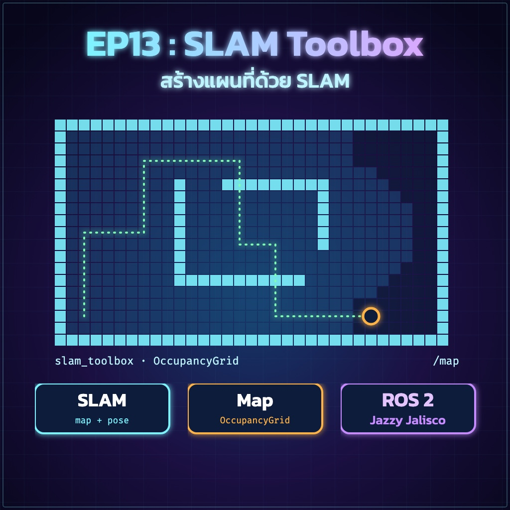
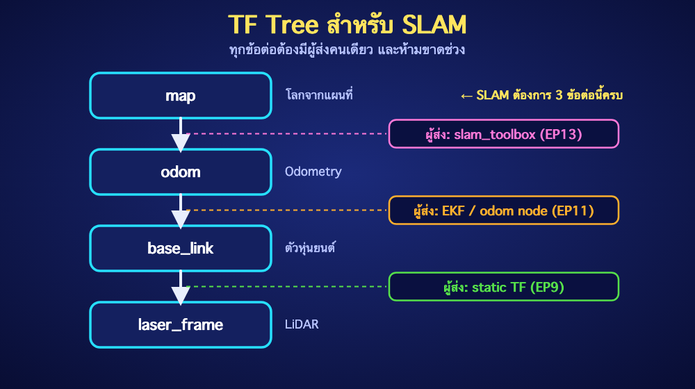
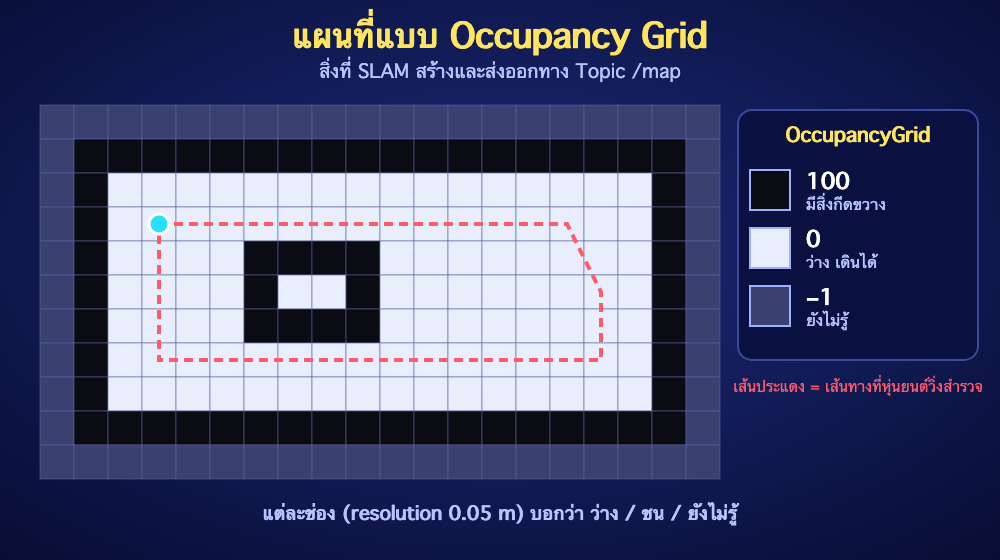

ย้อนกลับ

EP13
SLAM Toolbox — สร้างแผนที่
"ให้หุ่นยนต์วาดแผนที่ห้องเองด้วย LiDAR"
🎯 จุดประสงค์การเรียนรู้
- อธิบายแนวคิด SLAM และสิ่งที่ SLAM Toolbox ต้องการเป็นอินพุตได้
- ตรวจสอบ TF Tree และ /scan ก่อนเริ่มสร้างแผนที่ได้
- สร้างแผนที่ห้องด้วย
slam_toolbox แล้วดูผลใน RViz2 ได้
- บันทึกแผนที่เป็นไฟล์
.pgm + .yaml เพื่อใช้ต่อใน EP14 ได้
1. SLAM คืออะไร?
SLAM (Simultaneous Localization And Mapping) คือการ "วาดแผนที่ไปพร้อมกับรู้ว่าตัวเองอยู่ตรงไหนในแผนที่" เหมือนคนที่เดินเข้าห้องมืดแล้วคลำผนังวาดผังห้องไปเรื่อยๆ — ยิ่งเดินสำรวจ แผนที่ยิ่งสมบูรณ์ และ SLAM ยังช่วยแก้ความเพี้ยนสะสมของ Odometry (EP11) เมื่อหุ่นยนต์วนกลับมาจุดเดิม (Loop Closure)
/scan (EP12) ─┐
├─► slam_toolbox ─► /map (แผนที่)
TF odom→base_link (EP11) ─┘ └─► TF map → odom
- อินพุต:
/scan จาก LiDAR และ TF จาก Odometry
- เอาต์พุต: แผนที่
/map ชนิด nav_msgs/OccupancyGrid และ TF map → odom
2. ก่อนเริ่ม: ตรวจสอบ TF และ LiDAR
SLAM จะทำงานไม่ได้ถ้า TF ขาดช่วงหรือไม่มีข้อมูลสแกน ตรวจให้ครบทั้งสามข้อต่อ:

ros2 topic hz /scan
ros2 run tf2_ros tf2_echo odom base_link
ros2 run tf2_ros tf2_echo base_link laser_frame
map → odom ยังไม่ต้องมีตอนนี้ — slam_toolbox จะเป็นผู้ส่งเองเมื่อเริ่มทำงาน
⚠️ Odometry ดีสำคัญมาก: ถ้าหุ่นยนต์หมุนแล้ว yaw ใน /odom คลาดเคลื่อน แผนที่จะบิดเบี้ยว ให้ทำ LAB 11.1–11.2 ใน EP11 ให้ผ่านก่อน
3. ติดตั้งและตั้งค่า
sudo apt install -y ros-jazzy-slam-toolbox \
ros-jazzy-nav2-map-server ros-jazzy-teleop-twist-keyboard
mkdir -p ~/ros2_ws/src
cd ~/ros2_ws/src
ros2 pkg create --build-type ament_python brobot_slam
mkdir -p brobot_slam/config
สร้างไฟล์ ~/ros2_ws/src/brobot_slam/config/mapper_params_online_async.yaml (ย่อจากไฟล์ตัวอย่างของ slam_toolbox ค่าอื่นใช้ค่าเริ่มต้น):
slam_toolbox:
ros__parameters:
solver_plugin: solver_plugins::CeresSolver
ceres_linear_solver: SPARSE_NORMAL_CHOLESKY
ceres_preconditioner: SCHUR_JACOBI
ceres_trust_strategy: LEVENBERG_MARQUARDT
ceres_dogleg_type: TRADITIONAL_DOGLEG
ceres_loss_function: None
# Frame และ Topic
odom_frame: odom
map_frame: map
base_frame: base_link
scan_topic: /scan
mode: mapping
# คุณภาพแผนที่
resolution: 0.05
max_laser_range: 12.0
minimum_travel_distance: 0.2
minimum_travel_heading: 0.2
map_update_interval: 5.0
transform_publish_period: 0.02
transform_timeout: 0.2
tf_buffer_duration: 30.
do_loop_closing: true
stack_size_to_use: 40000000
ดูไฟล์ตัวอย่างฉบับเต็มได้ที่ /opt/ros/jazzy/share/slam_toolbox/config/mapper_params_online_async.yaml
แก้ setup.py ให้ติดตั้งโฟลเดอร์ config (หลักการเดียวกับ EP6 และ EP11):
import os
from glob import glob
# ในลิสต์ data_files=[ ... ] ให้เพิ่มบรรทัดนี้
(os.path.join('share', package_name, 'config'), glob('config/*.yaml')),
cd ~/ros2_ws
colcon build --symlink-install --packages-select brobot_slam
source install/setup.bash
4. เริ่มสร้างแผนที่
เปิดสาม Terminal (ทุกตัว Source ROS 2 และ Workspace ก่อน):
# Terminal 1 : SLAM Toolbox
ros2 launch slam_toolbox online_async_launch.py \
slam_params_file:=$(ros2 pkg prefix brobot_slam)/share/brobot_slam/config/mapper_params_online_async.yaml \
use_sim_time:=false
# Terminal 2 : ขับหุ่นยนต์ด้วยคีย์บอร์ด
ros2 run teleop_twist_keyboard teleop_twist_keyboard
# Terminal 3 : ดูแผนที่
rviz2
- ใน RViz2 ตั้ง Fixed Frame เป็น
map
- Add → Map เลือก Topic
/map แล้วตั้ง Durability Policy เป็น Transient Local
- Add → LaserScan (Reliability: Best Effort) และ TF เพื่อดูตำแหน่งหุ่นยนต์
⚠️ ความปลอดภัย: ทดสอบทิศทางคำสั่งขับด้วยความเร็วต่ำก่อน และเตรียมสวิตช์ตัดไฟหรือปุ่มหยุดฉุกเฉินไว้ใกล้มือ teleop_twist_keyboard จะส่งคำสั่งต่อเนื่องจนกว่าจะกดปุ่มหยุด (k)
✅ Expected Result: เมื่อหุ่นยนต์เคลื่อนที่ พื้นที่สีเทา (ยังไม่รู้) ค่อยๆ ถูกแทนที่ด้วยพื้นที่ว่างสีขาวและผนังสีดำ และมี TF map → odom เพิ่มขึ้นมา
5. แผนที่ที่ได้คืออะไร?
แผนที่คือตาราง Occupancy Grid แต่ละช่องมีขนาดเท่ากับ resolution (0.05 เมตร) และมีค่าบอกสถานะ:

| ค่าในช่อง | ความหมาย |
|---|
0 | ว่าง หุ่นยนต์เดินผ่านได้ |
100 | มีสิ่งกีดขวาง |
−1 | ยังไม่เคยสำรวจ |
6. เทคนิคสำรวจให้แผนที่สวย
- ขับช้าๆ โดยเฉพาะตอนเลี้ยว — หมุนเร็วทำให้สแกนเบลอและแผนที่บิด
- วนกลับจุดเดิม เพื่อให้เกิด Loop Closure ช่วยแก้ความเพี้ยนสะสม
- หลีกเลี่ยงกระจก หน้าต่างกระจก และพื้นผิวมันวาว เพราะ LiDAR วัดไม่ได้หรือสะท้อนผิด
- ทางเดินยาวที่ผนังเรียบเหมือนกันตลอด (Featureless) ทำให้ SLAM หลง ควรมีเฟอร์นิเจอร์หรือสิ่งของเป็นจุดสังเกต
- ระวังคนเดินผ่าน เพราะจะกลายเป็นสิ่งกีดขวางปลอมในแผนที่
7. บันทึกแผนที่
mkdir -p ~/maps
ros2 run nav2_map_server map_saver_cli -f ~/maps/classroom
จะได้ 2 ไฟล์ที่ใช้ต่อใน EP14:
classroom.pgm — ภาพแผนที่ (ขาว = ว่าง, ดำ = สิ่งกีดขวาง, เทา = ยังไม่รู้)classroom.yaml — ข้อมูลกำกับแผนที่
image: classroom.pgm
mode: trinary
resolution: 0.05
origin: [-1.2, -3.4, 0]
negate: 0
occupied_thresh: 0.65
free_thresh: 0.25
ทางเลือก: ถ้าต้องการกลับมาสำรวจแผนที่เดิมต่อภายหลัง ให้เก็บ Pose Graph ด้วย ros2 service call /slam_toolbox/serialize_map slam_toolbox/srv/SerializePoseGraph "{filename: '/home/<user>/maps/classroom_graph'}" (ใช้ Path เต็ม)
✅ ตรวจไฟล์: เปิด classroom.pgm ด้วยโปรแกรมดูรูปภาพ ต้องเห็นผังห้องที่ผนังเป็นเส้นต่อเนื่อง
🧪 LAB 13.1 — สร้างแผนที่ห้องเรียน
- ตรวจ TF และ /scan ตามหัวข้อ 2 ให้ครบ
- เริ่ม
slam_toolbox แล้วขับหุ่นยนต์ช้าๆ ให้ครบทุกมุมห้องและวนกลับจุดเริ่มต้น
- บันทึกแผนที่ด้วย
map_saver_cli
- วัดความกว้าง-ยาวห้องจริงด้วยตลับเมตร แล้วเทียบกับขนาดในแผนที่ (จำนวนช่อง × 0.05 เมตร)
เกณฑ์ผ่าน: ผนังเป็นเส้นตรงต่อเนื่อง ไม่ซ้อนกันเป็นสองชั้น และขนาดห้องในแผนที่คลาดเคลื่อนไม่เกิน 10%
🧪 LAB 13.2 — เปรียบเทียบการขับเร็วกับช้า
- สร้างแผนที่เดิมอีกครั้ง โดยหมุนเลี้ยวเร็วกว่าเดิมประมาณสองเท่า
- บันทึกเป็นไฟล์ใหม่ เช่น
classroom_fast
- เทียบรูปแผนที่สองไฟล์ แล้วสรุปว่าความเร็วมีผลอย่างไร
เกณฑ์ผ่าน: อธิบายความแตกต่างของสองแผนที่ได้พร้อมเหตุผล
⚠️ Common Problems
| อาการ | แนวทางแก้ |
|---|
| แผนที่ไม่ขึ้นใน RViz2 | ตั้ง Fixed Frame เป็น map และ Map → Durability เป็น Transient Local |
| Log ขึ้น Message Filter dropping message / ไม่มี transform | ตรวจ TF odom → base_link และ base_link → laser_frame ว่าไม่ขาด ไม่ซ้ำ (tf2_echo / view_frames) |
| ผนังซ้อนเป็นสองชั้นหรือแผนที่บิด | Odometry ไม่แม่น ปรับ wheel_radius / track_width (EP11) และขับให้ช้าลง |
| แผนที่ไม่อัปเดตเมื่อเคลื่อนที่ | ค่า minimum_travel_distance / heading สูงเกินไป หรือ /scan ไม่มาตามเวลา (ตรวจ ros2 topic hz) |
| หุ่นยนต์ในแผนที่ไม่ตรงกับความจริง | ตรวจทิศ LiDAR ใน static TF (EP9) ว่าหันตรงกับตัวหุ่นยนต์ |
| map_saver_cli ไม่ได้ไฟล์ | ตรวจว่า slam_toolbox ยังทำงานอยู่ และมี Topic /map |